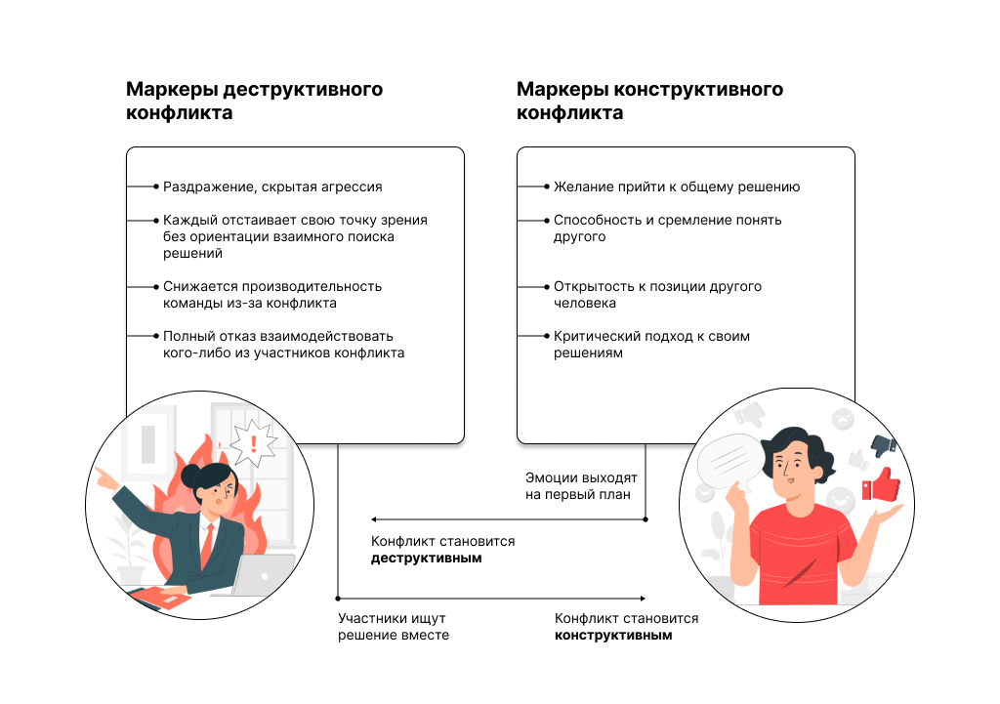
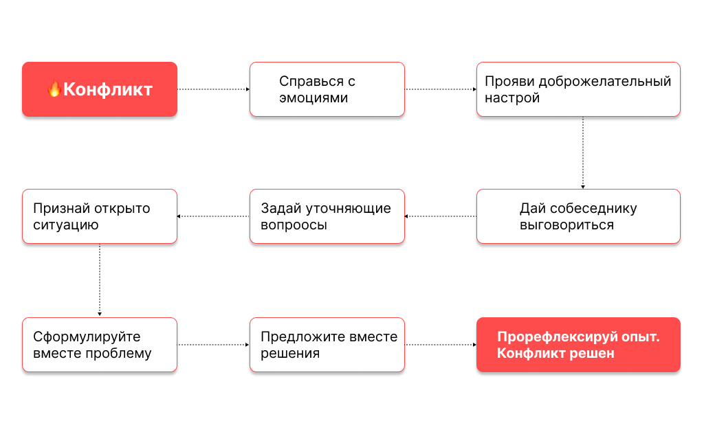

История о том, как Лера потеряла команду и что на этот счет думает нейробиология
Лера руководит проектом по запуску детского образовательного центра. У нее была сильная команда, нацеленная на результат. Но через полгода она осталась у разбитого корыта. Почему?
Кейс с SMM и заявками из ВК: когда границы задач размыты, мозг тратит лишнюю энергию на тревогу.
Если команда не понимает дедлайн, когнитивная нагрузка зашкаливает, и мозг просто "саботирует" задачу.
Маркеры деструктивного и конструктивного конфликтов:

Цель: Научиться видеть связь между причиной и сутью ситуации.
Вспомните случай с администратором, где Лера спросила: "Сложно было посмотреть инструкцию?". Какой это тип конфликта?

1. Вспомните недавний конфликт в вашей команде.
2. Опишите его решение, прогнав через все 7 шагов алгоритма.
Критерий успеха: последовательность и переход от эмоций к To-Do листу.